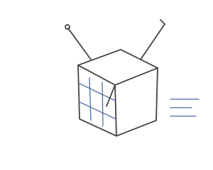

final undergrad project
Entry 009: A tiny satellite and a lying IMU
- When
- final undergrad project
CanSat stuck with me, so I built a tiny CubeSat-style unit. It wasn't to real dimensions, just small.
[photo coming]
Inside: a 9DOF IMU (accelerometer, gyroscope, magnetometer) and an altimeter, in a self-contained unit that sent data over Wi-Fi.
Testing: I bounced it around and dropped it in free fall to collect data.
Ground station: I reused the telemetry software I'd built as CanSat ground station officer. A 3D model on screen tilted live with the unit, so it always showed its true orientation.

tilt it. then switch the Kalman filter on.
Why I learned Kalman filters: I used the cheapest IMUs there are (MPU6050), and no IMU is perfect. A Kalman filter was my only option.
- Lesson: cheap sensors lie. Math makes them honest.